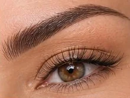

Cejas
Sombreados y microblading

Define, corrige y armoniza la forma de tus cejas, con más densidad y simetría, siempre adaptadas a las facciones de tu rostro.
- Diseño personalizado y la técnica más adecuada para cada caso.
- Corrige pequeñas imperfecciones sin perder tu esencia.
- Menos tiempo de maquillaje y una mirada más expresiva desde que te levantas.